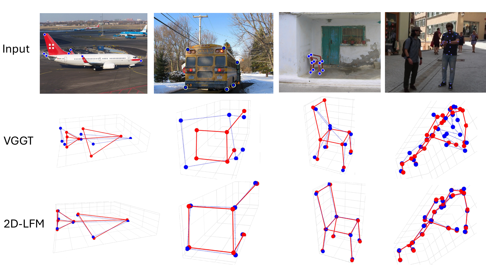
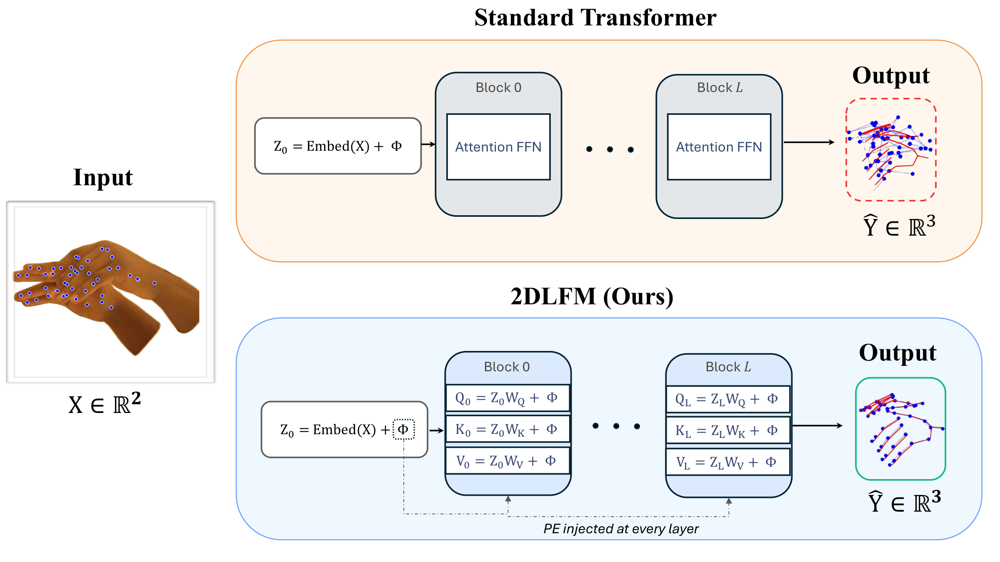

Comparison with VGGT
Given only 2D landmarks, 2D-LFM recovers cleaner object-specific 3D structure than depth-based lifting through VGGT.

Main paper figure comparing our 2D-only lifting model against VGGT, with ground truth in red and predictions in blue.
Architecture Overview
2D-LFM preserves landmark correspondence by injecting positional encoding at every attention layer instead of only once at the input.

Architecture overview from the paper illustrating how repeated positional encoding preserves correspondence structure for 2D-to-3D lifting.
Abstract
Recent vision foundation models give the impression that 3D reconstruction from RGB is largely solved. Yet these systems struggle with object-specific 3D structure: the fine-grained geometry implied by an object's landmarks or skeleton. In this paper, we show that when a model is given only 2D landmarks, it can recover more accurate 3D structure than state-of-the-art depth-from-RGB foundation models. Classical lifting approaches such as PAUL demonstrate this principle but do not scale beyond single categories, while methods like 3D-LFM scale but require extensive 3D supervision. We present the first lifting foundation model that learns object-specific 3D geometry using only 2D supervision. The key idea is to inject correspondence structure into the model via a positional encoding inspired by classical structure-from-motion. This simple inductive bias enables robust, object-agnostic 3D lifting that rivals or exceeds recent 3D-supervised approaches, revealing that landmark-based lifting remains a powerful and under-exploited paradigm for 3D understanding.
BibTeX
@inproceedings{dabhi2026dlfm,
title = {2D-LFM: Lifting Foundation Model without 3D Supervision},
author = {Dabhi, Mosam and Gill, Irhas and Jeni, Laszlo A. and Lucey, Simon},
booktitle = {Proceedings of the IEEE/CVF Conference on Computer Vision and Pattern Recognition (CVPR)},
year = {2026}
}
Update the year or citation key if your final camera-ready citation differs.